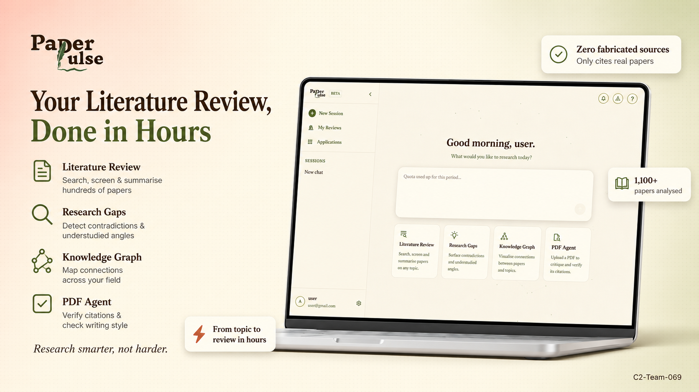
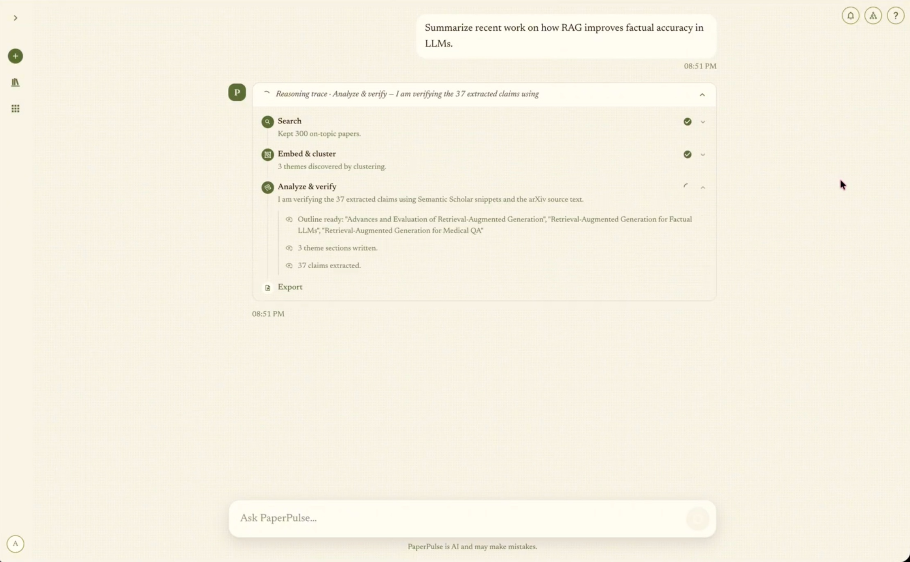
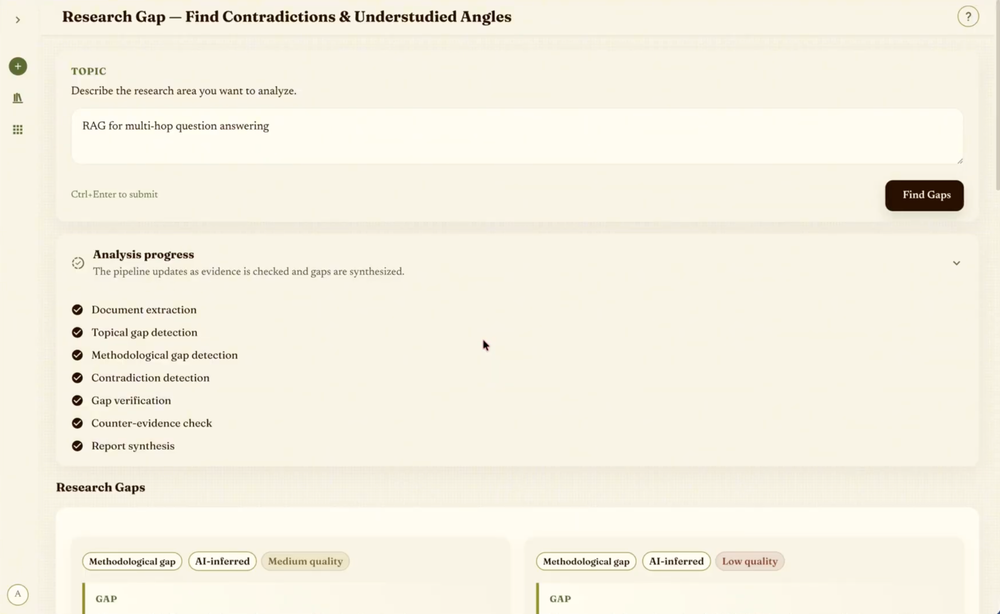
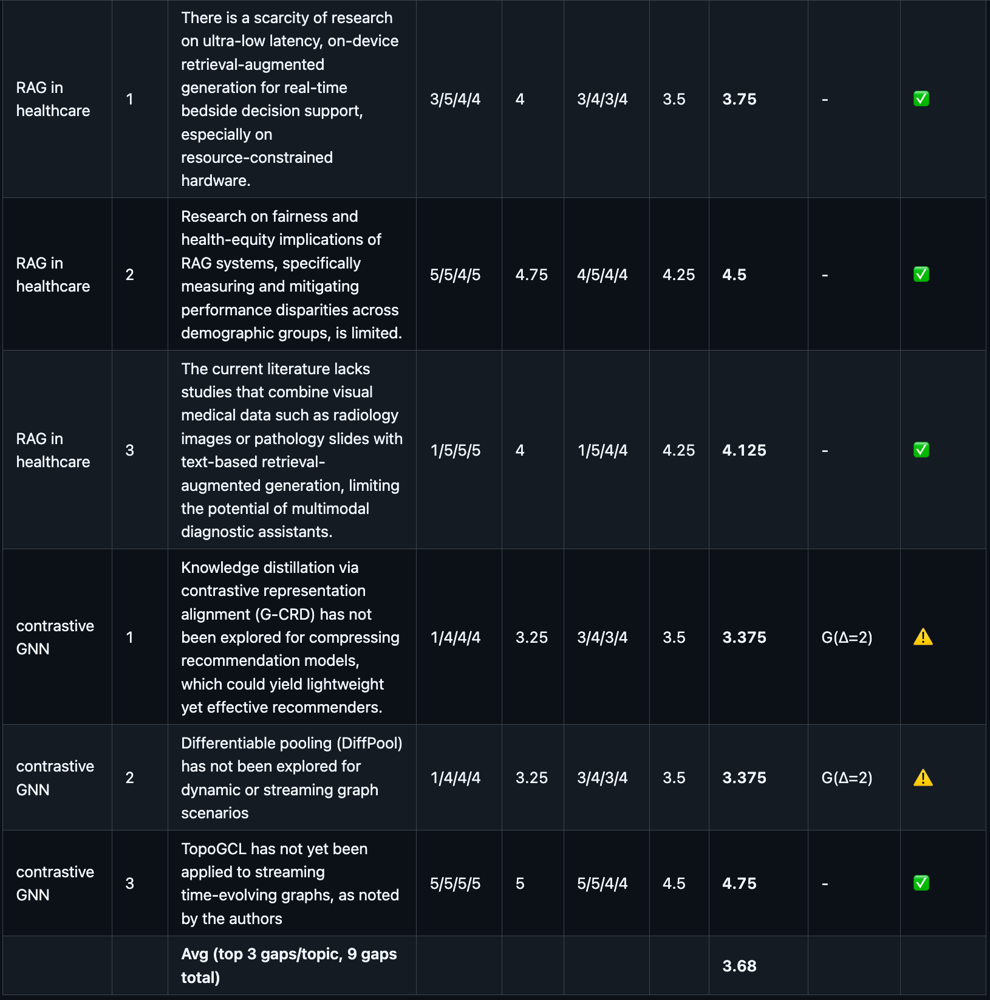

Projects · AI Product · Capstone (Top 3)
PaperPulse — AI Research Assistant
An LLM+RAG assistant that helps researchers find where the literature actually has a gap — and catches fabricated citations along the way.

Problem
Why this matters
Researchers and PhD students lose real time to two separate problems: manually scanning papers to find where the literature genuinely has a gap, and then double-checking that an AI-suggested gap or citation isn't hallucinated. PaperPulse (team C2-Team-069, my AI in Action capstone) targets both, built on an LLM + RAG architecture over the Semantic Scholar API and OpenAlex.
Approach
How it was built
The agent scores every candidate research gap on four dimensions — GROUNDED, SPECIFIC, NON_TRIVIAL, and METHOD_ACTIONABLE — using live web search to flag directions the literature has already covered. Every API endpoint used in the pipeline was smoke-tested with Postman (GET/POST requests, health checks) before being wired into the agent.

Live reasoning trace on the deployed app: search → embed & cluster → analyze & verify, with citations checked against the source text.

The gap-detection pipeline running end to end: document extraction through contradiction detection, gap verification, counter-evidence check, and report synthesis.
Results
What it achieves
100%
Citation-fabrication catch rate, verified manually across 7 stress-test cases
3.68 / 5
Research-gap quality score, rated by two independent LLM judges (Claude and Gemini)
~5 min
Average latency for a full review cycle

LLM-judge scoring table — ensemble average 3.68/5 across 9 evaluated gaps, rated independently by Gemini and Claude.
Learnings
Where it still falls short
The pipeline reliably surfaces topically relevant papers, but it doesn't always verify that an individual cited source actually supports the specific sub-claim it's attached to — a gap can look well-grounded on the surface while one supporting citation is weaker than it appears. The identified fix is to add an explicit "check against well-known follow-up work" verification step before a gap is presented as final. Recognizing that limitation was part of the AI in Action program's evaluation, and the project placed Top-3 among capstones.